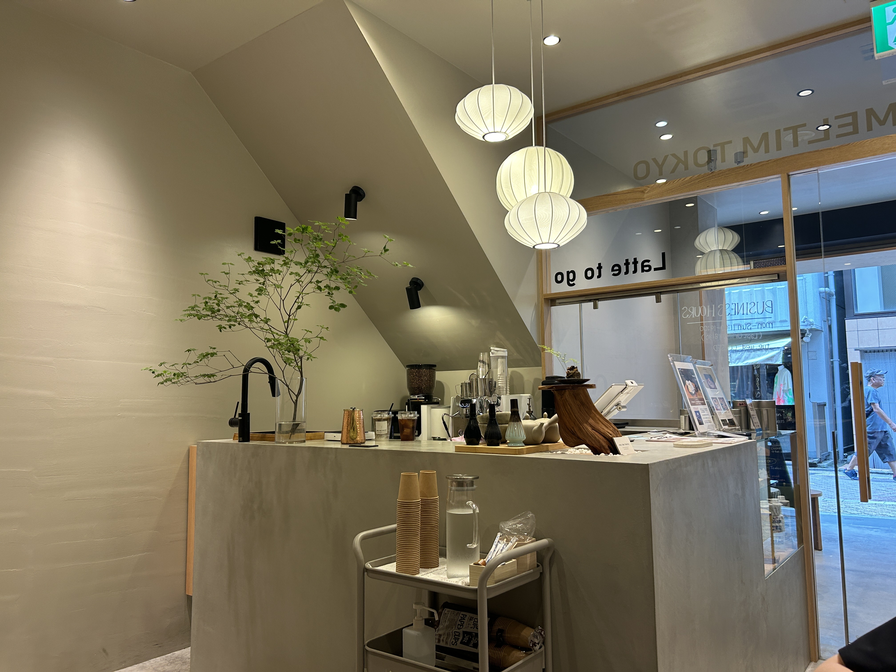
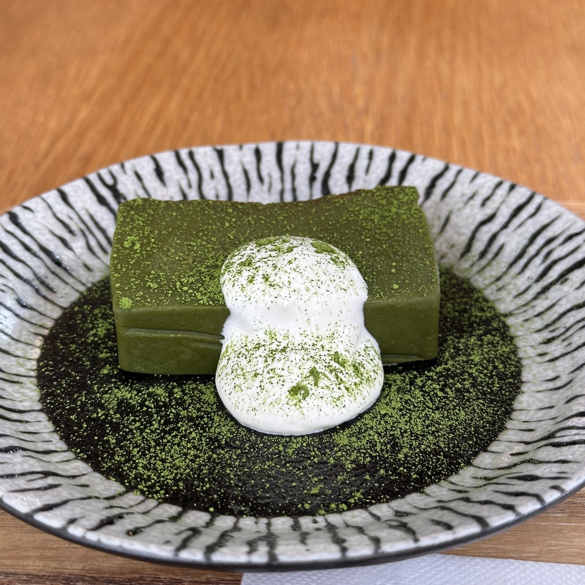
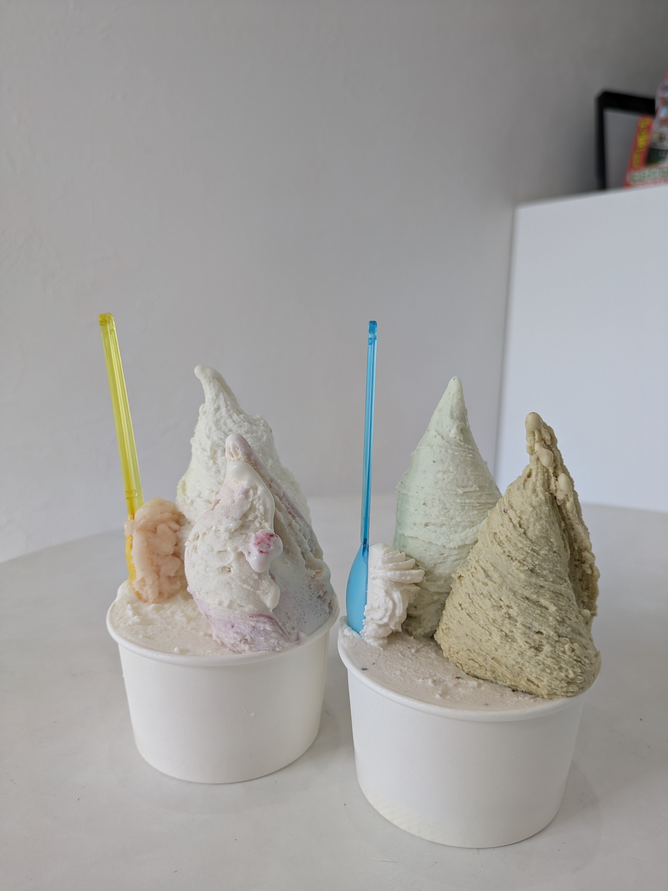

大人気カフェ~穴場カフェまでご紹介☕
cafe
HEY
〒980-0812 宮城県仙台市青葉区片平1-1-11 カタラナビル1F
🕑9:30~18:00(不定休)
Adapt
〒980-0811 宮城県仙台市青葉区一番町2-11-12 プレジテント一番町1F
🕑10:00~17:00 18:00~22:00(不定休)

HEY
動物たちのの可愛くておいしいドーナツが勢揃いしているカフェ
Kero men&caramel

Adapt
韓国風カフェ。店内はホワイトを基調としていてインスタ映え間違いなし。
タルティーヌ
TOTO's cafe
〒980-0803 宮城県仙台市青葉区国分町1-6-15 奥田ビル3F
🕑月火金土日 11:00~16:00 水木 11:00~22:00(不定休)
MythiQue
〒980-0021 宮城県仙台市青葉区中央2-4-11 水晶堂ビル3F
🕑月火水木金 11:00~20:00 土日祝 11:00~18:00(不定休)

TOTO's cafe
店内にはドライフラワーがたくさんのおしゃれな空間が広がっている。発酵カフェと掲げており栄養たっぷりのメニューを味わうことができる。
発酵御膳

MythiQue
ロンドン、北欧、イタリア等様々なコンセプトで作りあげられた店内。本格的なコーヒーも味わうことができます。
3Dラテアート
cafe Mozart
〒980-0811 宮城県仙台市青葉区一番町3-11-14 丸和ビル3F
🕑月火水木日 11:00~22:30 金土 11:00~23:00(不定休)
MIDI
〒982-0241 宮城県仙台市太白区秋保町湯元字釜土東28
🕑10:00~17:00(定休日:水曜)

cafe Mozart
アンティーク家具が揃っており何時間でも居れてしまう素敵空間。ランチメニューからカフェメニューまで勢揃い。
スコーンのセット

MIDI
秋保の自然に囲まれた小さなカフェ。宿泊前後にもぴったりのお店。
テリーヌチーズケーキ
甘味処すずや
〒980-0081 宮城県仙台市青葉区一番町2-3-37
🕑12:00~19:00(不定休)
Gelateria Liberta
〒981-3133 宮城県仙台市泉区泉中央3-34-5 グランドール泉中央3
🕑12:00~20:00(不定休)

甘味処すずや
和風スイーツが人気のお店。モナカやあんみつ等のメニューが勢揃い。
抹茶テリーヌショコラ

Gelateria Liberta
日本で6人しかいないイタリアンジェラート協会認定のジェラート騎士が在中するカフェ。濃厚な味わいのジェラートが楽しめる。
TRE
↑